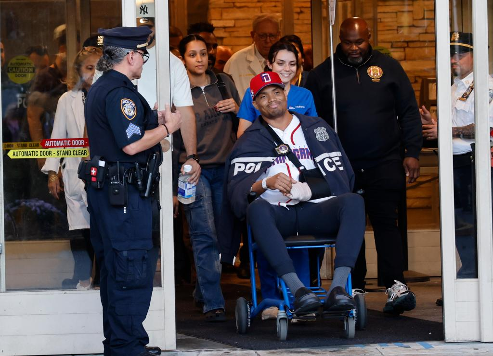

October 07, 2026
Manhunt over: pair wanted for stabbing off-duty NYPD detective caught in Massachusetts basement


Photo: DCPI; Kevin C. Downs for NY Post
THE BRONX — The manhunt is over. Two fugitives wanted in the brutal stabbing of off-duty NYPD Detective Jose Mercedes were tracked across state lines and arrested overnight in a Massachusetts basement, the U.S. Marshals Service announced Wednesday.
D'Angelo Caraballo, 25, and Sneider Mejia, 24, were taken into custody late Tuesday night by the Marshals' NY/NJ Regional Fugitive Task Force, working with the Marshals' Massachusetts district, the Massachusetts State Police, and the Lynn Police Department. They are currently held by Massachusetts State Police awaiting extradition to New York, where they are expected to face attempted-murder charges.
What happened
On Friday afternoon, Oct. 2, the two men approached Mercedes — a 33-year-old detective assigned to the Bronx's 44th Precinct — on an e-bike in broad daylight and tried to steal his gold chain, police said. Mercedes fought back. The attackers allegedly stabbed him seven times, then sped away, leaving him bleeding on a Bronx sidewalk.
The knife missed his vital organs. He was treated at Jacobi Medical Center and released Monday.
Surveillance footage released by the NYPD showed Mejia racing along a sidewalk as the driver, with Caraballo — shirtless — riding behind him. Investigators named the pair publicly on Tuesday and launched an extensive multi-jurisdictional manhunt.
The capture
According to the Marshals, task force investigators developed intelligence indicating the fugitives had fled the New York area together. A targeted operation found them hiding in the basement of a home in Lynn, Mass. Both were taken into custody without further incident or injuries.
"When individuals commit violent, unprovoked acts against members of law enforcement, there is nowhere they can hide," said U.S. Marshal Ricky J. Patel. "From the second this case was assigned, the U.S. Marshals Service in the Southern District of New York and the NY/NJ Regional Fugitive Task Force worked around the clock, tracking these suspects across state lines to ensure they were apprehended without further violence."
Dennis Matulewicz, head of the Marshals Service for the District of Massachusetts, added that the pair "will now face justice" and sent prayers for the detective's fast and full recovery.
The survivor
Photos from Tuesday showed Mercedes leaving Jacobi Hospital in a wheelchair, arm wrapped and a police jacket draped over his shoulders, surrounded by officers and hospital staff. After seven stab wounds and four days in the hospital, he walked out alive.
The suspects' extradition proceedings are expected in the coming days.
The Night Desk covers this story as developing — details, charges, and extradition outcomes will be updated here as they're confirmed.
Source: U.S. Marshals Service / NY Post — read the original report
← Back to latest stories